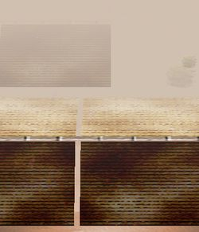

- Welcome to Touhou Wiki!
- Please register to edit. For assistance, check in with our Discord server or IRC channel.
Mayohiga
| マヨヒガ/ Mayohiga ma̠jo̞çiɡ̃a̠ | |
|---|---|
|
 Mayohiga in Perfect Cherry Blossom
| |
| Location |
Somewhere around the Great Hakurei Barrier? |
| Residents |
|
Appearances | |
| Official Games | |
| |
| Print Works | |
| |
Mayohiga (マヨヒガ or 迷ひ家, lit. Stray House) is a lost village somewhere around the Great Hakurei Barrier. No humans live here and it is infested with cats due to Chen bringing them here.
General Information[edit]
"In an abandoned estate in the mountain recesses, in which a lost traveler, upon taking and returning with some daily necessities, received good luck," so to speak appeared as such in the Touhou Project. It is located deep within some mountains and somewhere around the Great Hakurei Barrier, similar to the Hakurei Shrine. Although the generic term "mountain" can refer to the Youkai Mountain, it cannot be certain. However, while the shrine is physically on both sides of the barrier, Mayohiga acts as the rest of the barrier separating Gensokyo from the Outside World. Humans who come near the barrier will start to become disoriented and lost, and if they persist onwards, they'll find themselves spirited away to the almost dreamlike village of Mayohiga.
The Village of Cats (猫の棲む里 Neko no Sumu Sato) is believed to be located in Mayohiga, far away from the Human Village, where it is a place that Chen can try to make the cats here her servant. Chen brought the cats here because humans abandoned this village ages ago.
It is a very likely that the explanation of Yukari Yakumo and Ran Yakumo living in Mayohiga is actually not true. It was said that the place where Yukari lives is "somewhere the existence of which is completely unknown that nobody would ever finally be able to reach it," but Mayohiga is a place where lost humans occasionally stumble upon, and furthermore also a place from where people are able to return safely. Additionally, in Perfect Memento in Strict Sense, the various things about the situation of the Mayohiga have been described, so Mayohiga is a place where humans are able to know about[citation needed].
Background Information[edit]
The original source of Mayohiga appears to be from 1910 book Tōno Monogatari (遠野物語, Tōno Legend), a collection of folk stories by Kunio Yanagita, known to be the founding father of Japanese folklore. This strange story is mainly told in the northeast of Japan. The name of the story is sometimes written as Mayoiga (マヨイガ or 迷い家) The tale is about a strange house that people wandering into another world are supposed to reach.
Although there are abnormally many variations of the story, there are some big things that they all have in common:
- A traveler, upon getting lost in mountain recesses, accidentally discovers an estate with a splendid door.
- However, there is absolutely no indication of the estate's residents.
- Upon taking and return with some tableware and daily necessities, good luck arrives.
Some versions say that in the garden of the estate, several kinds of flowers are blooming out of season, describing how lots of livestock were raised there, but there are also versions that say that there is not a single trace of living things, and that it is completely deserted. Some versions say that the lost traveler absolutely will be able to return, while other versions state that whether the traveler will be able to return will have to depend on themselves. Some versions say that the good luck gained from taking and returning with some stuff from the mansion is quite slight and trivial, while other versions result in them and their descendants becoming extremely prosperous.
However, it was Tōno Monogatari that became the most internationally-known story. In chapters 63-64 of the book, the appearance and circumstance of the Mayohiga is written:
- "The state of the house was such that there were many cattle, horse, and chicken, and flowers were blooming red and white."
- "In the same way upon entering the main entrance, there is a room to retrieve food and soup.
In the tatami room there is an iron kettle boiling water, and exactly now it can be seen that tea is boiling.
One would think that there would be someone in a bathroom somewhere around this vicinity."
Formerly, Tōno was a source of enormous wealth, where its existence can be considered to come from another world, that perhaps one could consider it to create such a legend as this. Additionally in Tōno Monogatari, Mayohiga exists in the mountain Shiromiyama in Tōno, that in the drafts of Tōno Monogatari, it was even indicated on a map.
Mayohiga's Appearance[edit]
- Perfect Cherry Blossom
Mayohiga is the location of Stage 2 in Perfect Cherry Blossom, and the stage theme is "The Fantastic Tales from Tono". The heroines will travel here to look for the source as to who took spring from Gensokyo, only to find that the place is deserted, only having fairies. Chen will appear as the midboss of the stage, then again as the boss. Chen states that whoever wanders into Mayohiga, then they can't leave. However, Chen is easily defeated, and the heroine was able to leave easily.
Gallery[edit]
Chen surrounded by cats in Bohemian Archive in Japanese Red
Chen and Aya Shameimaru sitting on a roof Bohemian Archive in Japanese Red